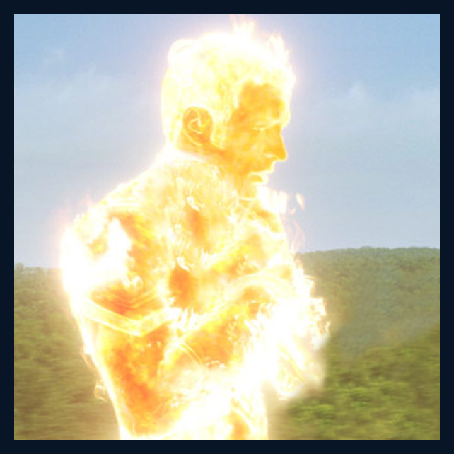
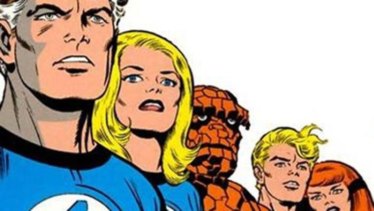
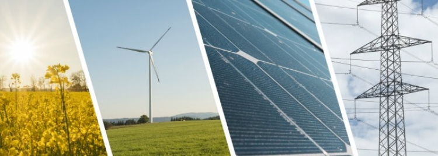

Un espoir pour la planète
Avec les problèmes écologiques d'aujourd'hui, la torche humaine va devoir arrêter de brûler. A moins qu'il n'y ait une autre solution ?
Un problème pour notre cher Johnny Storm
Avec l’article précédent, vous avez compris que l’utilisation des énergies fossiles affecte énormément notre planète. Et que la Torche Humaine n’arrange rien, bien au contraire. Se pose alors une question : Que faire pour que notre super héros pollue moins ? Si notre super héros souhaite continuer de jouer les justiciers, il devra alors réduire son empreinte carbone.
Une chance de garder sa vie de super héros
Pour que la Torche Humaine continue d’exister, nous avons trouvé LA solution : lui créer une combinaison sophistiquée permettant de capter le co2 rejeté ! En effet, si vous vous souvenez bien, le principal problème vient du fait qu’il rejette beaucoup trop de CO2 lorsqu’il s’enflamme. Avec cette combinaison inspirée des filtres présent sur certaines usines à charbon, plus de soucis à avoir. Lorsque la torche prendra feu sa combinaison captera et stockera l’ensemble du CO2 rejeté. Pour éviter d’en produire une à chaque combat, elle est ininflammable et indestructible. Une petite contrainte persiste quand même. Après ses combats, il sera obligé de stocker le CO2 retenu par sa combinaison dans des gros réservoirs d’hydrocarbure faute de ne pas pouvoir le détruire. Désolé Johnny mais cette combinaison est sûrement impossible à réaliser, tu vas devoir arrêter de bruler, "pour la planète"
Des solutions pour l'avenir réalisable par tous
Puisque la solution pour la torche humaine est irréalisable, c’est à vous de sauver la planète ! Chacun de nous peut adopter des petits gestes du quotidien qui préservent notre planète : prendre les transports en communs, manger moins de viandes… Mais ce que nous cherchons ici, c’est franchir le cap du petit geste pour atteindre celui qui changera l’histoire. Et pour ce faire, de nombreuses solutions sont déjà possibles !
Les contrats énergie verte
Saviez-vous qu’il existait des contrats énergie verte ? Ces contrats proposent de réinjecter l’équivalent de votre consommation électrique en énergie renouvelable sur le réseau. Votre consommation d’énergie sera alors issue de source qui se renouvelle naturellement. De plus, ces contrats permettent de faire avancer le milieu de l’énergie verte en France. Plutôt que de payer tous les mois (ou deux fois par ans) pendant toute une vie, il existe aussi des solutions qui raviront économies sur les factures et préservation de l’environnement.
Le recours aux énergie renouvelable chez soi
Panneaux solaires, éoliennes, centrale géothermique, tous ceci constitue un moyen d’adopter un mode de vie plus écologique. Pour ce faire, vous avez juste à envisager d’installer chez vous un moyen d’exploiter une énergie renouvelable ! Ce sont des installations couteuses mais certaine d’entre elle sont rentable au bout d’une dizaine années. De plus vous pouvez soit vendre votre énergie à EDF ou l’utiliser pour votre logement, dans tous les cas possibles vous ne serez pas perdant en investissant dans une installation pareille.